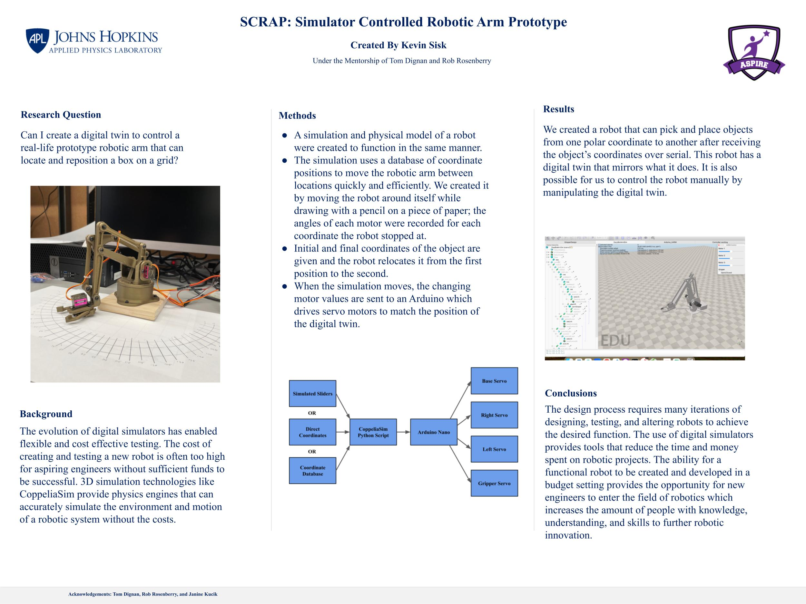

Simulator Controlled Robotic Arm Prototype (SCRAP)

Background
SCRAP is a simulator controlled robotic arm that responds to user input in a computer simulation and moves accordingly using an Arduino-style microcontroller and several servo motors. The models for the robot arm are title the "EEZYbotARM" by creator daGHIZmo on Tingiverse. During the school year of 2024-2025, my senior year of High School, I held an internship position at the Johns Hopkins Applied Physics Laboratory in the ASPIRE program under the mentorship of Rob Rosenberry and Tom Dignan. During this time I was enrolled in a research program in school that allowed me to produce SCRAP as well as a research paper on the Robotic Design Process and Robotic Simulations.
Proceeding Sections
As SCRAP was simultaneously completed as a research project, I have a number of sources that I wrote throughout the project. In place of high level descriptions on this page, I have included three sources below. The first is titled "SCRAP" and is the poster with which I presented my project at the JHU APL ASPIRE presentations which will give a brief yet detailed overview of the robot. The second is titled "High Five" and is the produced research paper from my project. Finally, I have included "Primary Research" which explores the code and iteration process of the robot throught the year of research.
SCRAP
 Download SCRAP PosterHigh Five
Download High Five PaperPrimary Research
Download Primary ResearchAcknowledgements
SCRAP was created during the 2023 - 2024 school year Johns Hopkins APL ASPIRE internship program under the mentorship of Thomas Dignan, Rob Rosenberry in combination with a research class led by Janine Kucik